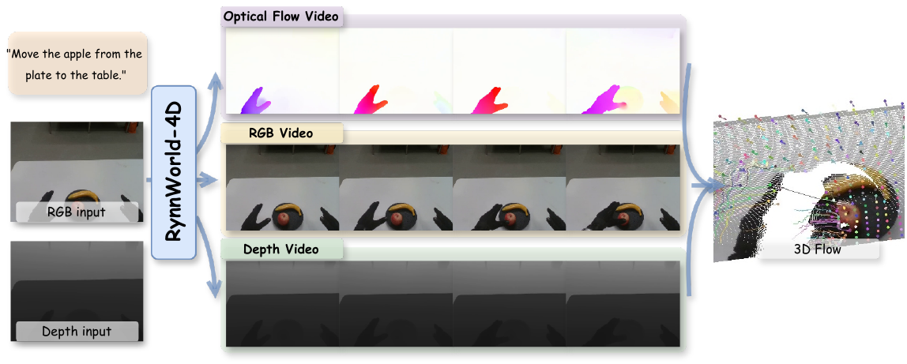
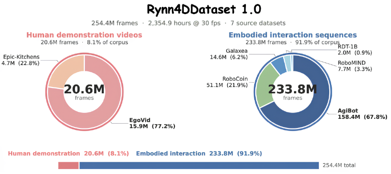
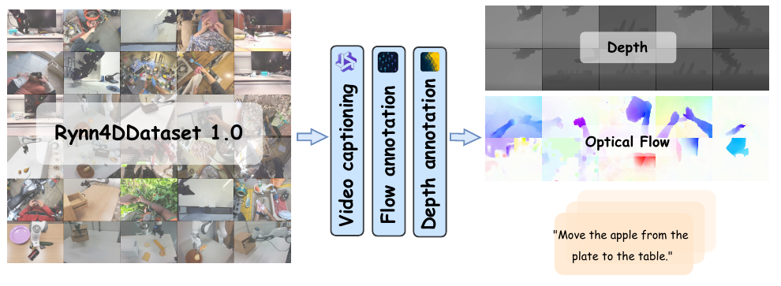
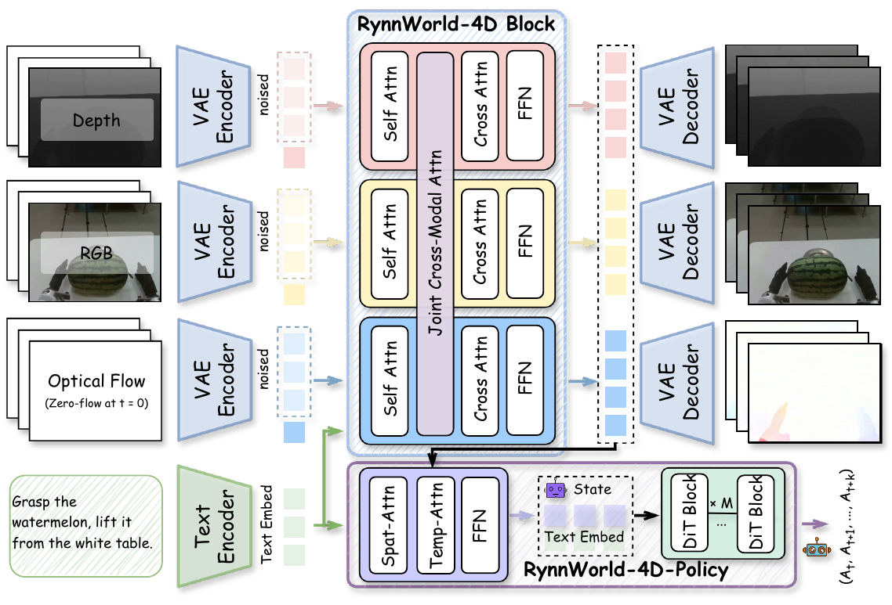
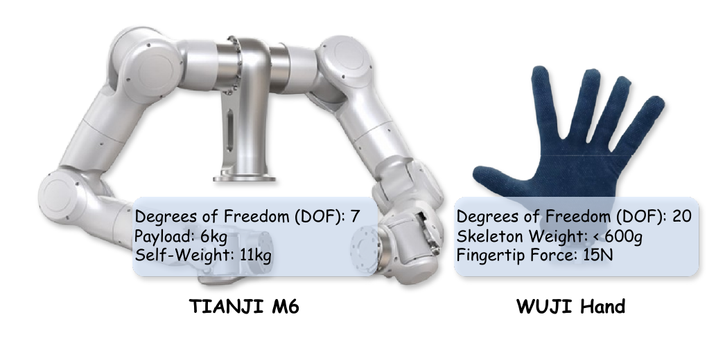
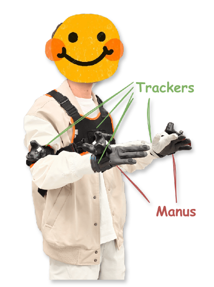
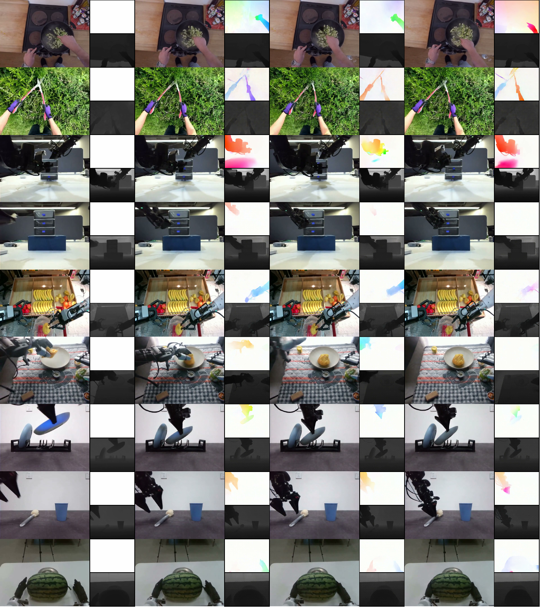
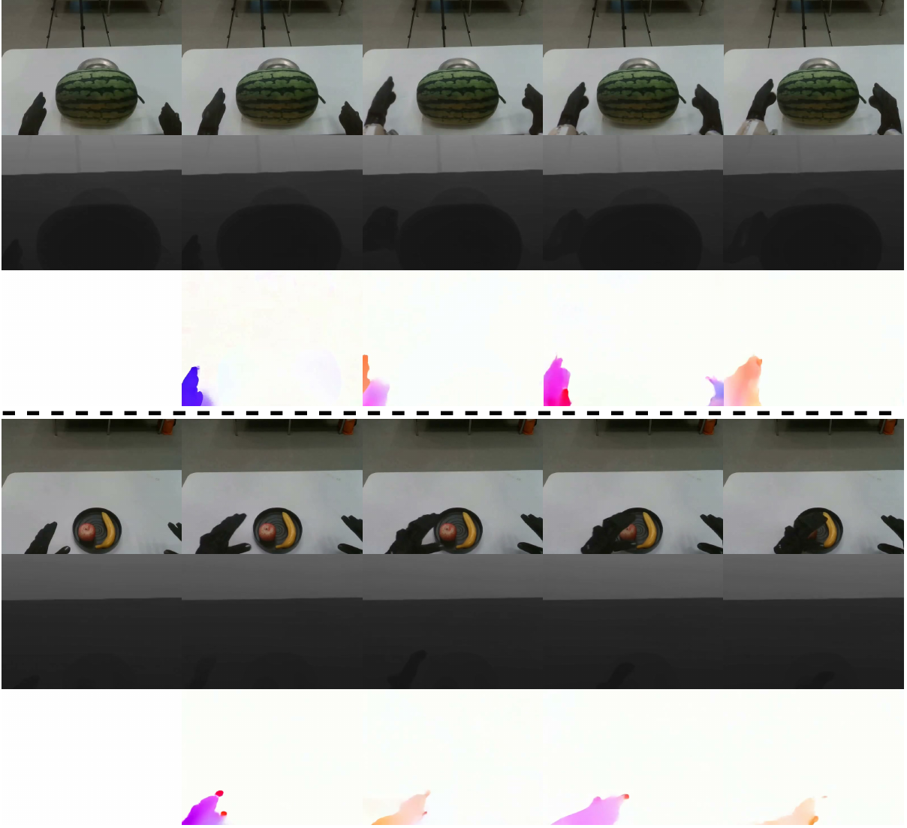
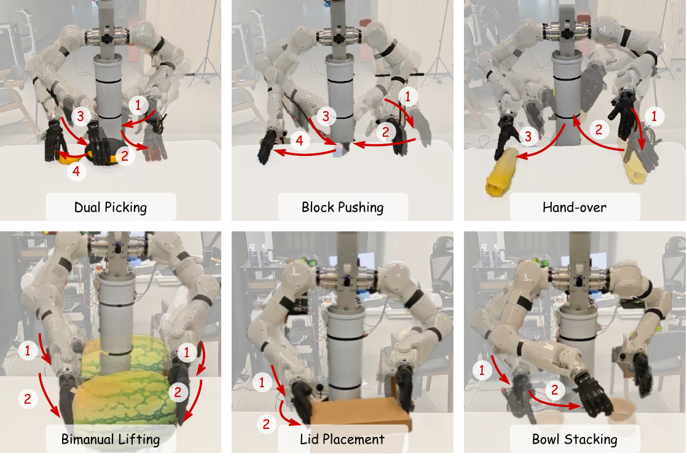

解读 by Xinkai Wang（王薪恺） · 上海创智学院 · 2026
原论文：RynnWorld-4D: 4D Embodied World Models for Robotic Manipulation · Haoyu Zhao, Xingyue Zhao, Siteng Huang, Xin Li, Deli Zhao, Zhongyu Li。
00 · 先抓住主线
- 问题：RGB 视频能描述“画面怎么变”，却不直接给出物体离相机多远、像素属于哪个 3D 点、这个点如何在三维空间移动。对 6-DoF 操作和双手协同，这正是最有价值的信息。
- 表示：RynnWorld-4D 不直接生成体素、NeRF 或 4D Gaussian，而是同步生成 RGB、深度和光流三条二维视频流。深度负责把像素抬到 3D，光流负责建立相邻帧对应，二者合起来可推导可见表面的 3D scene flow。
- 模型：作者把 Wan 2.2-TI2V-5B 的单分支 DiT 扩为 RGB / Depth / Flow 三分支；各分支保留独立 self-attention 与 FFN，每隔 3 层插入一次 Joint Cross-Modal Attention，共 10 次同帧跨模态交换。
- 数据：Rynn4DDataset 1.0 含 254.4M 帧、约 2,354.9 小时；91.9% 来自机器人交互。Qwen3-VL、Depth Anything 3、DPFlow 分别提供文字、深度和光流伪标注。
- 控制：RynnWorld-4D-Policy 不完成 50 步视频采样，而是在固定噪声时刻单次运行冻结世界模型，读取第 15 个 block 的 9216 维三模态特征，再用 Flow Former 与 4-step action flow matching 预测 \(10\times54\) 的双臂灵巧手动作块。
- 证据：世界模型在 7 个 RGB 指标中领先 6 个，深度 \(\delta_1=0.610\)；策略六任务宏平均成功率 74.76%，高于最佳外部基线 DP 的 63.81%。最强证据落在几何结构与策略宏平均，而不是 IQ 或标准光流 EPE。
01 · 问题从哪里来：视频会“看见未来”，机器人却要“进入未来”
开放世界操作真正要求的不是下一帧像什么，而是：场景里的可见表面在哪里、接触后往哪移动、双臂与物体的相对距离是否仍然安全。RynnWorld-4D 的出发点，是把视频模型的生成先验变成更接近机器人动作空间的预测表征。
相机直接给 RGB；深度传感器或单目模型给可见表面距离；相邻帧给二维运动对应。
机器人需要输出关节目标或动作块，改变末端执行器与物体在三维空间中的轨迹。
预测中的外观、几何和运动不能各说各话；否则漂亮视频无法支持精确抓取与交接。
2D 世界模型的三个断点
第一是几何断点。同一个 RGB patch 可以对应不同深度，透视投影又把真实尺度与 6-DoF 关系压扁到平面。像素相似不意味着末端执行器与物体在 3D 中接近。
第二是时序物理断点。视频生成模型可以用纹理连续性“糊过”尺度漂移、局部形变和遮挡；机器人却会在几厘米的误差里失手。尤其在双手交接中，两个高自由度末端之间的相对距离、遮挡与接触时机都不能只靠颜色残差暗中恢复。
第三是计算断点。如果先用扩散模型完整去噪出视频，再逐帧做逆动力学，每次重规划都要付出几十步重模型推理。论文于是进一步问：能否直接消费世界模型内部“正在想象未来”的 latent，而不把想象解码成视频？
研究脉络：它位于 2D 生成与显式 4D 重建之间
| 路线 | 代表形态 | 优势 | 主要限制 | 与本文关系 |
|---|---|---|---|---|
| 低维世界模型 | Dyna、latent dynamics | 训练与规划高效 | 难覆盖开放视觉变化 | 给出“预测服务控制”的经典目标 |
| 2D 视频模型 | Wan、CogVideoX | 大数据先验、生成能力强 | 几何与动作空间有落差 | RynnWorld-4D 继承其可扩展主干 |
| 优化式 4D | NeRF / 4DGS | 显式三维、可新视角渲染 | 逐场景优化慢，常需多视角 | 本文避免重型 4D 场优化 |
| 前馈 4D | L4GM、CAT4D、4DNeX | 推理更快，可预测 pointmap | 常偏物体级或输入条件较强 | 4DNeX 是最接近的几何基线之一 |
| 动态 SfM | 动态点云重建 | 可恢复时变几何 | 通常不能从单图生成未来 | 说明“重建过去”不等于“生成未来” |
| 多模态视频世界模型 | TesserAct：RGB-D-Normal | 把静态表面朝向纳入生成 | 法线不直接描述帧间位移 | 本文改用光流显式连接相邻时刻 |
“世界模型”在这里具体指什么
生成器学习的是 \[ p\!\left(V^{\mathrm{rgb}},V^{\mathrm{depth}},V^{\mathrm{flow}} \mid I_0^{\mathrm{rgb}},I_0^{\mathrm{depth}},\text{instruction}\right). \] 条件里有当前 RGB-D 和任务语言，却没有候选 action sequence。因此它是指令条件的未来预测器，不是可以直接比较多条候选动作后果的 \(p(s_{t+1}\mid s_t,a_t)\)。动作由后接的逆动力学策略从预测表征中读取。
- 4D
- 通常指 3D 空间随时间变化。本文并不存储完整 3D 体，而是用每时刻的投影表面与运动对应近似描述。
- Projective 4D
- “投影式 4D”：仍在相机二维网格上表示，但每个网格带深度与二维位移，可反投影到三维。
- Optical Flow
- 同一可见点从一帧到下一帧在图像平面移动了多少像素，记为 \((\Delta u,\Delta v)\)。
- Scene Flow
- 三维点随时间的位移向量。它比光流多出深度方向，但可靠推导需要相机标定、尺度一致深度与原始光流。
02 · RGB-DF 为什么能表示 4D：把像素抬高，再沿时间追踪
RGB 负责辨认“是什么”，Depth 负责回答“在哪里”，Flow 负责回答“屏幕上往哪走”。三者在同一像素网格、同一时间轴上同步生成，正是这篇论文最小而实用的 4D 表示。

三条输出不是后处理拼接，而是在同一个扩散循环里并行去噪。光流首帧是零流条件；随后彩色区域集中在手与物体的移动处。真正的 4D 论证发生在右侧：二维像素先由深度反投影，再由光流寻找下一帧对应点。
第一步：用深度把像素反投影到相机坐标
令第 \(t\) 帧像素的齐次坐标为 \(\mathbf p_t=[u,v,1]^\top\)，深度为 \(D_t(u,v)\)，相机内参为 \(\mathbf K\)。针孔相机模型给出：
直觉：\(\mathbf K^{-1}\mathbf p_t\) 是从相机穿过该像素的一条射线方向，乘深度后得到射线上的 3D 点。所有像素组成当前可见表面的点云。
第二步：用光流寻找下一帧的同一个可见点
若光流 \(\mathbf f_{\mathrm{opt}}=[\Delta u,\Delta v]^\top\) 把像素 \((u,v)\) 对应到下一帧的 \((u+\Delta u,v+\Delta v)\)，则：
这就是 scene flow：同一个表面点在三维相机坐标里的位移。论文再用深度梯度阈值 \(\|\nabla D\|>\tau\) 屏蔽物体边界伪影，并把轨迹画到鸟瞰点云中。
这些公式何时才真正成立
从第一性原理看，能“反投影”不等于已经保证“公制、物理正确的 4D”。上面的差值至少依赖六个条件：
- 尺度：\(D_t\) 与 \(D_{t+1}\) 必须处在一致的 metric scale，而不只是视觉上像深度。
- 标定：\(\mathbf K\) 必须已知，并随 resize / crop 正确更新；镜头畸变也需处理。
- 坐标系：相机若在移动，两个点先要用外参 \((\mathbf R_t,\mathbf t_t)\) 变换到共同世界坐标，才能把差值解释为物体运动。
- 原始位移：光流要保留 \((\Delta u,\Delta v)\) 数值，而非只有颜色轮可视化。
- 可见性：遮挡、反遮挡、越界像素、无效深度与 flow confidence 要有明确 mask。
- 插值：流落在小数像素时，\(D_{t+1}\) 的采样规则需要定义。
论文最值得保留的一点技术判断
这套 RGB-DF 是单视角可见表面的投影式 4D，不是视角无关、遮挡完备的 4D 场。论文的数据与评测又使用 8-bit 深度视频、颜色编码 flow 和尺度对齐深度指标，因此“metric scene flow”目前更像表示层面的可推导性，而不是被真实公制 GT 充分验证的结果。
不过，这种折中仍很有价值：显式 4D 体难以继承大规模视频模型，而 RGB-DF 完全保留二维 token 网格，能直接复用 VAE、DiT、FlashAttention 和视频预训练权重。它牺牲全局 3D 完备性，换取数据与模型规模。
03 · Rynn4DDataset 1.0：254.4M 帧如何变成三模态监督
三分支模型的真正前提不是架构，而是每条视频都要有同步的文字、深度与运动。作者没有等待昂贵传感器数据，而是用强视觉模型把 7 个既有数据源转成大规模伪 4D 语料。

| 子集 | 来源 | 帧数 | 子集内占比 | 提供的先验 |
|---|---|---|---|---|
| Human 20.6M | EPIC-Kitchens | 4.7M | 22.8% | 厨房、工具、手物交互 |
| EgoVid | 15.9M | 77.2% | 更广的人类第一视角活动 | |
| Robot 233.8M | Galaxea | 14.6M | 6.2% | 机器人操作轨迹 |
| RDT-1B | 2.0M | 0.9% | 大模型机器人数据 | |
| RoboMIND | 7.7M | 3.3% | 多任务操控 | |
| RoboCoin | 51.1M | 21.9% | 规模化机器人交互 | |
| AgiBot | 158.4M | 67.8% | 数据主体与机器人执行先验 |
三条伪标注流水线

1. Video captioning
视频先以 1 fps 抽样，再切成 5 秒片段。Qwen3-VL 被要求在一个段落里描述主体与动作、环境与背景、物体及交互、整体场景语境；最大输出 512 token，temperature 0.7，结果保存为 JSON。语言条件因此不是短标签，而是对未来交互的细粒度描述。
展开：论文给 Qwen3-VL 的原始提示词
Please describe this video in detail. Include the following aspects:
1. The main subject and action in the video.
2. The environment and background.
3. Any objects and their interactions.
4. The overall scene context and atmosphere.
Provide a concise but comprehensive caption in one paragraph.2. Optical-flow annotation
DPFlow 在原始分辨率上顺序处理相邻帧。估计场经 Middlebury 色轮编码成 RGB 可视化，并以 25 fps MP4 保存。白色对应零流，因此 I2V 的首个 flow condition 是一张白图。
3. Depth annotation
Depth Anything 3 使用 DA3NESTED-GIANT-LARGE-1.1 checkpoint；模型同时可给出逐帧深度与相机 pose，但本文训练管线明确保存并使用的是深度视频。视频以 30 fps 处理，短边工作分辨率为 392。压缩深度数组被双线性上采样回原分辨率，裁剪到 \([0,5]\) 米，再量化为 8-bit：
量化结果再存成 RGB 视频，使 Depth 也能直接进入原本为自然图像训练的 Wan VAE。
训练片段如何进入 latent 空间
论文训练规格为 81 帧、\(480\times640\)。Wan 的 causal VAE 在时间上压缩 4 倍，因此：
保留第一帧再每 4 帧产生一个后续 latent，正好得到后文策略读取的 21 个未来表征时刻。
大规模不等于无偏：数据构成中的四个信号
它解决了什么
- 让三模态预训练不再依赖少量带深度传感器的机器人集。
- 人类第一视角提供更丰富的手物交互先验。
- 机器人数据占主导，使分布更接近下游执行。
- 同一网格格式可直接复用视频 VAE 与 DiT。
仍需回答什么
- caption 1 fps、flow 25 fps、depth 30 fps 如何严格对齐到训练片段。
- 7 个来源如何去重、过滤、采样，test episode 如何与训练隔离。
- AgiBot 占总帧约 62.3%，是否造成机器人与场景偏置。
- 深度和 flow teacher 的错误如何估计置信度并阻止跨模态传播。
理解伪 4D 数据的正确方式
模型学习的是“强感知教师对开放视频的稠密解释”，而不是真实传感器逐像素测得的 4D 真值。它的规模优势非常实在，但后续几何指标也会部分衡量模型复现 DA3 / DPFlow 教师的能力。
04 · 三分支世界模型：先让模态专门化，再让它们在同一帧对话
把 RGB、深度、光流塞进同一组 channel 并不能自动得到一致的 4D。三者的统计结构差异很大：RGB 需要纹理与语义，Depth 更接近分段平滑的几何面，Flow 则以稀疏运动边界和方向场为主。RynnWorld-4D 因此选择“独立主干 + 稀疏交互”。
基础模型：Wan 的 latent video flow matching
基础模型是 Wan 2.2-TI2V-5B：30 层 diffusion Transformer，hidden size \(d=3072\)，FFN size 14,336。3D VAE 编码器 \(\mathcal E\) 把视频压成 latent \(z_0\)，解码器 \(\mathcal D\) 再还原视频。附录采用 rectified-flow 记法：
这里 \(t=0\) 是干净数据，\(t=1\) 是噪声；目标速度就是线性路径导数 \(\epsilon-z_0\)。采样时从噪声端向数据端反向积分。
I2V 的第一帧 latent 被当作干净条件，其余未来帧从噪声恢复。论文附录把 Wan 称为“autoregressively predicts video latents”，但其实际 DiT 对整段 latent 做联合流匹配去噪，并不是逐帧自回归生成。

三条分支不是三次完全独立生成。每条分支先保留自己的表示流形，再通过紫色 Joint Cross-Modal Attention 对齐同一时刻、同一空间网格的外观、几何与运动。
三条专属分支
对模态 \(m\in\{\mathrm{rgb},\mathrm{depth},\mathrm{flow}\}\)，扩散 latent 记为 \(\mathbf z_t^m\in\mathbb R^{T\times C\times H\times W}\)。完整实现还含 batch 维；patchify 后，Transformer hidden 变成 \([B,T\!\cdot\!S,d]\)，其中 \(S\) 是每帧空间 token 数。
- RGB 分支沿用预训练 Wan backbone。
- Depth / Flow 分支复制 RGB 的 patch embedding、self-attention、normalization、FFN 与输出投影，先从成熟的视频先验起步。
- 三支的 self-attention 与 FFN 默认彼此独立，避免纹理、几何、运动被同一个非线性映射强行混合。
- 文字指令是模态无关条件，三分支共享 text cross-attention 的 K/V projection；各支保留自己的 query 与输出路径。
- 公开推理代码复用同一个 Wan VAE 依次编码/解码三种模态；Depth 灰度图和 Flow 色轮图都被当作 RGB 图像处理，并非使用专门的几何 tokenizer。
Joint Cross-Modal Attention：每隔三层对齐一次
JA 被插在 layer \(0,3,6,\ldots,27\)，总共 10 个，位置在宿主 block 的 intra-modal self-attention 之后。一次 JA 可以拆成五步。
Step 1 · 给模态打标签并拉齐数值尺度
每支有独立 LayerNorm；模态 embedding 从 0 初始化，广播到所有时空 token。它告诉注意力“这来自 RGB / Depth / Flow”，同时不破坏 Stage 1 的初始行为。
Step 2 · 每支只计算一套可复用 K/V
同一来源分支的 K/V 被另外两支复用，不为每个“源→目标”组合单独建投影。参数成本因此从朴素的 \(18d^2\) 降为 \(12d^2\)。
Step 3 · 把跨模态注意力限制在同一视频帧
token 从 \([B,T\!\cdot\!S,d]\) reshape 为 \([B\!\cdot\!T,S,d]\)。RGB 的第 \(i\) 帧只能看 Depth / Flow 的第 \(i\) 帧，不会把前一帧几何误混到后一帧。然后 Q/K 使用共同的 3D RoPE：
双向论文设定下，RGB 查 Depth+Flow，Depth 查 RGB+Flow，Flow 查 RGB+Depth。因为注意力已按帧隔离，3D RoPE 在 JA 中最关键的作用是保持各模态相同 \((u,v)\) 网格的几何对应。
Step 4 · 零初始化输出，非零 gate 暖启动
初始化时联合路径输出严格为 0，Stage-1 表征不被突变；但 \(\tanh(1)\neq0\)，所以 OutProj 第一更新步就能获得梯度。
zero-init 的准确梯度解释
设 \(y=x+\tanh(g)WA\)，初始 \(W=0,g=1\)。此时 \(\partial y/\partial W=\tanh(g)A\neq0\)，所以输出投影先离开零点；但 \(\partial y/\partial g=\mathrm{sech}^2(g)WA=0\)，Q/K/V 上游梯度也因 \(W=0\) 暂为 0。gate 与注意力投影要等 \(W\) 更新后才开始学习。设计确实避免了 \(W=0,g=0\) 的双零死锁，只是论文把“谁在第一步得到梯度”说反了。
Step 5 · 参数量为什么仍然很大
代入 \(d=3072\)，每个 JA 的线性权重约为：
相对朴素 \(18d^2\) 方案节约约 566M 参数，但仅 JA 本身仍超过十亿参数；再加上接近三份 Wan Transformer 分支，990 ms 的主干瓶颈并不意外。
这一架构的核心归纳偏置
模态内用完整时空 self-attention 学习各自规律；模态间只在同帧做稀疏交互，强迫外观、深度轮廓和运动边界在对应网格上达成一致。它把“分工”和“对齐”放在不同模块里。
05 · 三阶段训练：先会说三种语言，再学会彼此翻译
直接把预训练 RGB backbone 复制成三支并全量联训，Depth / Flow 会同时面对分布迁移与跨模态干扰。作者用三阶段 curriculum 把这两个困难拆开。
关闭 JA，三支各自学习 RGB、Depth、Flow 的流匹配任务。所有分支可训练；LR 2e-5，warm-up 500，\(\lambda_{\mathrm{flow}}=0.5\)。
冻结 backbone / self-attention / FFN，只训练 10 个 JA、RMSNorm、模态 LayerNorm、gate 与 embedding。LR 5e-5，warm-up 200，Branch Dropout 0.2。
JA 已学会基本对齐后，解冻全模型，在完整 Rynn4DDataset 1.0 上联合微调。LR 1e-5，warm-up 500，Branch Dropout 降到 0.1。
| 配置 | Stage 1 | Stage 2 | Stage 3 |
|---|---|---|---|
| Fusion | none | joint / frozen backbone | joint / full SFT |
| Trainable | all branches | JA + modality parameters | all parameters |
| Learning rate | 2e-5 | 5e-5 | 1e-5 |
| Warm-up | 500 | 200 | 500 |
| \(\lambda_{\mathrm{flow}}\) | 0.5 | 1.0 | 1.0 |
| Branch Dropout | — | 0.2 | 0.1 |
统一的三模态流匹配目标
对 \(m\in\mathcal M=\{\mathrm{rgb},\mathrm{depth},\mathrm{flow}\}\)，三支都学习同一线性路径。第一 latent 帧是干净 I2V condition：真实 RGB、真实/伪 Depth、zero Flow；它不进入损失，监督只覆盖 \([1:]\) 的未来帧：
共享同一个 Gaussian sample 让三条去噪轨迹从相同随机 realization 出发；它是一种强对齐启发式，但并不等价于显式 3D 几何约束。
Branch Dropout：让缺失模态可以被另外两支补回
Stage 2/3 每个 step 以 \(p_{\mathrm{drop}}\) 的概率触发；触发后在 Depth / Flow 中随机挑一支，把未来 noisy latent \([1:]\) 换成纯高斯，第一条件帧仍保留。RGB 永不 drop，因为它是外观锚点。JA 被迫从可见分支重建被破坏的模态，而不是只做三路并排生成。
noise_video = torch.randn_like(video_latent)
noise_depth = noise_video.clone()
noise_flow = noise_video.clone()
noisy_rgb = (1 - sigma) * rgb_latent + sigma * noise_video
noisy_depth = (1 - sigma) * depth_latent + sigma * noise_depth
noisy_flow = (1 - sigma) * flow_latent + sigma * noise_flow
# first latent frame is the clean I2V condition
noisy_rgb[:, :, 0:1] = rgb_condition
noisy_depth[:, :, 0:1] = depth_condition
noisy_flow[:, :, 0:1] = zero_flow_condition
loss = mse(rgb_pred[:, :, 1:], rgb_target[:, :, 1:])
loss += mse(depth_pred[:, :, 1:], depth_target[:, :, 1:])
loss += lambda_flow * mse(flow_pred[:, :, 1:], flow_target[:, :, 1:])两个不显眼但重要的训练问题
第一，被 drop 分支被替成纯噪声，相当于该支处在 \(t=1\)，但网络仍可能收到全局任意 \(t\)；这更像 modality erasure，而不是严格沿同一 flow path 采样。第二，论文用“flow 首帧没有信息”解释 Stage 1 的 \(\lambda_{\mathrm{flow}}=0.5\)，但首帧本来就被 \([1:]\) 排除，减半权重更合理的解释应是稳定早期优化，而非减少首帧损失。
优化与资源设置
- AdamW：\(\beta_1=0.9,\beta_2=0.95\)，weight decay \(10^{-4}\)；linear warm-up 后 cosine decay。
- 每一阶段只加载前一阶段的 model weights，optimizer 与 scheduler 重置。
- EMA decay 0.9999，shadow weights 驻留 CPU，用于推理。
- 输入 81×480×640；bf16 mixed precision；gradient checkpointing。
- Stage 2/3 使用 DeepSpeed ZeRO-2 与 optimizer offload。
- per-GPU batch 1，gradient accumulation 2–4；论文未给 GPU 数、总 steps / epochs、训练时长与总算力。
消融会在后文证明：如果跳过 Stage 1，\(\delta_1\) 从 0.610 降到 0.479；如果完全移除大规模 4D 预训练，AEPE 从 0.170 恶化到 0.729。curriculum 与数据规模都不是装饰。
06 · 从 4D latent 到动作：不生成视频，只读取“未来感”
RynnWorld-4D-Policy 的工程洞察很直接：完整视频只是给人看的解码结果，机器人真正需要的是世界模型内部已经编码好的未来几何与运动。于是重型 backbone 只前向一次，后续 4 步 ODE 发生在轻量动作头里。
Predictive 4D encoder
世界模型冻结。当前 RGB 图像 center-crop 到 \(480\times640\) 并归一化到 \([-1,1]\)，在线 DA3 提供 Depth；二者与指令进入一次 forward，读取三分支中间 hidden，并沿 channel 拼接：
实验实现取 block 15，每支 Transformer width 为 3072，所以拼接宽度是 \(3\times3072=9216\)。这里论文沿用 \(C\) 容易和 VAE latent channel 混淆；它实际指 Transformer feature width。
输入只给当前一帧，但世界模型的 latent 网格包含 21 个预测时刻。策略因此不只是读取静态图像特征，而是读取“如果按这条指令继续，未来可能怎样变化”的时空表征。实现使用离散 scheduler index \(t=500\)；论文预备知识却用连续 \(t\in[0,1]\)，两者的归一化映射没有明写。
Flow Former：把巨大 token 场压成固定查询
第一步让每个 learnable query 在单帧空间 token 中抓取与任务相关的区域；第二步让同一 query 沿时间比较运动。公开配置给出 6 层、8 heads、head dim 64、336 个 query、output dim 384。
动作 flow matching
动作头还接收 UMT5 语言 embedding 与 54 维 proprioception。世界模型的 flow convention 是 data→noise；公开策略代码为了从噪声正向积分到动作，采用相反但等价的参数化：
推理从 \(\tau=0\) 的动作高斯噪声出发，用 4 次 Euler 更新走到 \(\tau=1\)。公开动作头是 384 维、4 层 encoder + 4 层 decoder、8 heads；encoder attention / residual / MLP dropout 分别为 0.3 / 0.1 / 0.05。语言目标截取 32 个 UMT5 token，每个 4096 维。
x = torch.randn(B, 10, 54)
dt = 1.0 / 4
for i in range(4):
t = torch.full((B,), i * dt)
velocity = policy.predict_velocity(
state={\"state_images\": flow_former_tokens,
\"state_obs\": proprio_54d},
x_t=x,
goal=text_embedding,
t=t,
)
x = x + velocity * dt
return x # [B, 10, 54]54 维动作来自哪里
真实平台是双 TIANJI M6 7-DoF 机械臂与双 WUJI 20-DoF 灵巧手：
公开 Tianji dataset 代码对 action 做 per-dimension mean/std 归一化，proprioception 使用传感器反馈的 observation.state，而不是已发送的 motor command。论文没有明确 54 维动作是绝对关节位置、增量、速度还是力矩。

遥操作数据如何采集

控制链
- wrist-to-chest transform：100–120 Hz。
- Pinocchio 独立进程求 IK。
- Ruckig 用速度、加速度、jerk 约束平滑轨迹。
- 机械臂目标以 200 Hz 下发。
- 手套信号转 21-point MediaPipe skeleton，再 retarget 到每手 20 DoF，并用 EMA 平滑。
- 策略与低层经 LCM 通信；低层接口 500 Hz，命令延迟 18–30 ms。
策略训练 recipe
- 每个任务 200 demonstrations，六任务共 1,200；冻结 RynnWorld-4D，只训练 Flow Former 与 action head。
- AdamW：LR \(10^{-4}\)，\(\beta=(0.9,0.9)\)，weight decay 0.05。
- schedule：2% linear warm-up，8% constant hold，90% cosine decay 到 peak LR 的 \(10^{-6}\) 倍。
- mixed precision、batch 1/GPU；论文写 100 epochs。公开默认 YAML 当前写 50 epochs。
9 Hz 到底是哪一个时钟
| 阶段 | 延迟 | 占比 | 含义 |
|---|---|---|---|
| DA3 depth estimation | 85 ms | 7.7% | 从 RGB 得当前深度 |
| VAE + latent prep | 18 ms | 1.6% | 三支首帧条件 |
| RynnWorld-4D | 990 ms | 89.5% | 重型三分支单次前向 |
| reshape + concat | 1 ms | 0.1% | 拼三支 hidden |
| Flow Former | 4 ms | 0.4% | 压缩预测特征 |
| Action head | 8 ms | 0.7% | 4-step Euler |
| Total | 1,106 ms | 100% | 每次重规划周期 |
关节低层 servo loop；不运行世界模型。
论文附录所称 command / cached lookup 接口频率。
\(10/1.106\)；把 10 个高层动作摊到一个规划周期后的 action-knot rate。
\(1/1.106\)；真正由新视觉重新运行 4D backbone 的 planning rate。
“闭环”需要按层次理解
每个 10-action chunk 内对世界模型是开环，约 1.1 秒后才用新视觉重规划，因此视觉闭环是约 0.9 Hz。论文同时说缓存动作以 50 Hz 执行，但 10 个离散动作在 50 Hz 下只覆盖 0.2 秒；要覆盖 1.106 秒必须插值、保持或重复约 5.5 个 servo tick，调度细节未给。9 Hz 是动作块摊销率，不是世界模型每秒看 9 次新画面。
07 · 实验与消融：哪些结论被数据真正支持
论文把证据拆成两条线：一条检查世界模型是否同时生成好 RGB、Depth 与 Flow；另一条检查这些 latent 是否真的让 54-DoF 操作更可靠。读表时必须把“生成质量”“几何形状”“运动颜色图”和“真实控制”分开。
世界模型评测协议
生成测试集只有 50 段 held-out 视频，随机来自 RoboMIND、RDT 与 Galaxea。论文没有报告三来源配额、随机种子、episode 去重清单与多 seed 生成方差；三个来源也都存在于大规模训练集，因此 split 质量是理解结果的前提。
| 维度 | 指标 | 实现 | 更好方向 | 测到什么 |
|---|---|---|---|---|
| RGB | IQ | MUSIQ / SPAQ，逐帧感知质量 | ↑ | 清晰度、噪声、压缩伪影 |
| MS | AMT-S 插帧重建 | 表中 ↑ | 时序平滑；附录未写误差到分数的归一化 | |
| SC | DINO ViT-B/16，首帧对后续帧 cosine | ↑ | 主体身份稳定 | |
| Subj. | 输入图对生成帧 DINO similarity | ↑ | 首帧主体保持 | |
| SSIM | 亮度、对比度、结构 | ↑ | 局部结构相似 | |
| PSNR | 排除共享首帧的像素重建 | ↑ | 与单一 GT 的逐像素接近 | |
| LPIPS | AlexNet feature distance | ↓ | 感知重建距离 | |
| Depth | AbsRel | median scale alignment 后相对误差 | ↓ | 尺度对齐后的形状误差 |
| \(\delta_1\) | 深度比值在 1.25 内的像素比例 | ↑ | 相对几何准确率 | |
| Flow | AEPE | 实际为色轮 RGB 图的 normalized L2 | ↓ | 颜色编码运动图接近程度 |
展开：Depth 与 Flow 指标的完整公式
先对预测深度做中值尺度对齐：
标准光流 EPE 本应是：
但附录明确说明，预测与 GT 都以 Middlebury 色轮 RGB 保存，实际计算 normalized RGB 的逐像素 \(L_2\)。因此表里的 0.170 没有“像素位移”单位，不能和常规 optical-flow benchmark 的 EPE 横比。
展开：三个 4D baseline 的具体运行条件
Free4D
首帧经 ViewCrafter + DUSt3R 生成 25 个 \(576\times1024\) novel views；COLMAP 求位姿与稀疏点云；4DGS / HexPlane 优化 10,000 iter（3,000 static + 7,000 joint），时间分辨率 \([64,64,64,150]\)，再从原视角渲染 RGB / Depth。深度逐帧 median scale。
4DNeX
Wan2.1-I2V-14B + rank-64 LoRA，融合 scale 0.5；首帧与 caption 后加 POINTMAP_STYLE.，50 steps、CFG 5.0、seed 42，生成 49 帧 / 24 fps。pointmap 的 z channel 被逐序列 min-max 到 [0,255] 作为深度。
TesserAct
CogVideoX-5B-I2V；初始 RGB 先估 Depth / Normal，三者拼成 9-channel condition；49 帧、\(640\times480\)、50 DDPM steps、guidance 7.5、image guidance 1.5。输出在宽度方向拼 RGB / Depth / Normal 后再切开。
三者的输入条件、帧长、分辨率和几何归一化并不完全一致；通用 CogVideoX / Wan 的 checkpoint、steps、CFG、seed 又没有在论文里给全。
世界模型主结果：RGB 7 项赢 6 项，Depth 优势更大
| Method | IQ↑ | MS↑ | SC↑ | Subj↑ | SSIM↑ | PSNR↑ | LPIPS↓ | AbsRel↓ | \(\delta_1\)↑ | AEPE↓ |
|---|---|---|---|---|---|---|---|---|---|---|
| CogVideoX | 0.604 | 0.976 | 0.866 | 0.917 | 0.534 | 12.17 | 0.577 | — | — | — |
| Wan-2.2-TI2V-5B | 0.555 | 0.970 | 0.886 | 0.909 | 0.593 | 14.54 | 0.489 | — | — | — |
| Wan-2.1-I2V-14B | 0.684 | 0.988 | 0.891 | 0.956 | 0.536 | 12.72 | 0.568 | — | — | — |
| Free4D | 0.354 | 0.993 | 0.787 | 0.848 | 0.492 | 12.40 | 0.597 | 0.804 | 0.179 | — |
| TesserAct | 0.608 | 0.992 | 0.904 | 0.956 | 0.693 | 16.91 | 0.335 | 0.699 | 0.279 | — |
| 4DNeX | 0.637 | 0.994 | 0.917 | 0.986 | 0.649 | 14.47 | 0.404 | 0.423 | 0.327 | — |
| RynnWorld-4D | 0.635 | 0.995 | 0.957 | 0.992 | 0.754 | 17.85 | 0.269 | 0.310 | 0.610 | 0.170 |
RynnWorld-4D 的 IQ 0.635 低于 Wan-2.1 的 0.684，也略低于 4DNeX 的 0.637；所以准确结论是“画质有竞争力”，而非所有视觉指标第一。它更显著的优势在结构保持：SSIM 0.754、PSNR 17.85、LPIPS 0.269，以及尺度对齐后的 Depth。

这些图能说明存在外观、深度轮廓与运动区域看起来对齐的样例；由于没有 GT、baseline、误差热图、长序列和失败例，它们不能单独证明“精确对齐”或“无闪烁”。

世界模型消融：每一个核心设计都能在表里找到对应损失
| Variant | IQ | MS | SC | Subj | SSIM | PSNR | LPIPS | AbsRel | \(\delta_1\) | AEPE |
|---|---|---|---|---|---|---|---|---|---|---|
| Independent Branches | 0.613 | 0.986 | 0.922 | 0.971 | 0.683 | 17.26 | 0.346 | 0.737 | 0.245 | 0.247 |
| w/o Modality Adaptation | 0.621 | 0.992 | 0.952 | 0.975 | 0.699 | 17.85 | 0.303 | 0.507 | 0.479 | 0.231 |
| w/o 4D Pre-training | 0.615 | 0.982 | 0.879 | 0.938 | 0.651 | 16.25 | 0.344 | 0.797 | 0.263 | 0.729 |
| w/o RoPE in JA | 0.628 | 0.990 | 0.935 | 0.980 | 0.710 | 17.10 | 0.295 | 0.420 | 0.450 | 0.210 |
| shared FFN | 0.618 | 0.985 | 0.902 | 0.965 | 0.695 | 16.50 | 0.320 | 0.580 | 0.380 | 0.280 |
| Full | 0.635 | 0.995 | 0.957 | 0.992 | 0.754 | 17.85 | 0.269 | 0.310 | 0.610 | 0.170 |
最强消融信号
- 去掉 4D pretraining：AEPE 0.170→0.729，变为 4.29 倍；AbsRel 0.310→0.797。
- 独立分支不融合：AbsRel 0.310→0.737；联合对齐对 Depth 最关键。
- 共享 FFN：\(\delta_1\) 0.610→0.380，支持保留模态专属非线性容量。
仍缺的消融
- JA 插入密度、层位与 matched-parameter control。
- Branch Dropout、共享噪声、frame-wise mask、gate 初始化。
- text K/V sharing 与双向/单向 JA。
- 参数量、延迟与质量的 Pareto 曲线。
六个真实机器人任务

| 任务 | 世界模型 episodes | 策略 episodes | 评测难点 |
|---|---|---|---|
| Dual Picking | 500 | 200 | 左右臂先后抓取两个物体 |
| Block Pushing | 500 | 200 | 左右臂顺序接力 |
| Hand-over | 300 | 200 | 双手相对距离、遮挡、交接时机 |
| Bimanual Lifting | 500 | 200 | 双臂同步、负载与落点 |
| Lid Placement | 300 | 200 | 盖子与箱体精确对齐 |
| Bowl Stacking | 300 | 200 | 薄边缘与接触稳定性 |
| Total | 2,400 | 1,200 | 每任务 35 次真实试验 |
每项测试把目标物的 workspace 坐标与轴向旋转随机化；120 秒内完成算成功。每项 35 次，所以一格的最小变化单位是 \(1/35=2.857\) 个百分点。
策略主结果：宏平均领先，但不是六项全胜
| Method | Dual | Block | Hand-over | Lift | Lid | Bowl | Macro avg. |
|---|---|---|---|---|---|---|---|
| Diffusion Policy | 77.14 (27/35) | 85.71 (30/35) | 17.14 (6/35) | 88.57 (31/35) | 57.14 (20/35) | 57.14 (20/35) | 63.81 (134/210) |
| \(\pi_0\) | 88.57 (31/35) | 94.29 (33/35) | 2.86 (1/35) | 91.43 (32/35) | 34.29 (12/35) | 51.43 (18/35) | 60.48 (127/210) |
| \(\pi_{0.5}\) | 94.29 (33/35) | 100.00 (35/35) | 0.00 (0/35) | 94.29 (33/35) | 37.14 (13/35) | 42.86 (15/35) | 61.43 (129/210) |
| RynnWorld-4D-Policy | 94.29 (33/35) | 97.14 (34/35) | 28.57 (10/35) | 97.14 (34/35) | 65.71 (23/35) | 65.71 (23/35) | 74.76 (157/210) |
相对每项最强外部基线，RynnWorld-4D-Policy 是4 胜、1 平、1 负：Dual 并列；Block 比 \(\pi_{0.5}\) 少成功 1 次；Hand-over 比 DP 多 4 次；Lift 多 1 次；Lid / Bowl 各多 3 次。六任务合并后比最佳宏平均 DP 高 10.95 个百分点、总计多 23 次成功。
35 次试验能支持多强的结论
23/35=65.71% 的 Wilson 95% 区间约为 [49.2%, 79.2%]；20/35=57.14% 约为 [40.9%, 72.0%]，高度重叠。Lid / Bowl 的 8.57 个百分点只等于 3 次成功差。论文没有 confidence interval、显著性检验、paired initial states 或盲评，因此小幅差异应看作有希望的点估计；更可信的是跨六任务累计的宏平均趋势。
策略模态消融：Depth 是主增益，Flow 的边际证据更弱
| Variant | Dual | Block | Hand-over | Lift | Lid | Bowl | Macro avg. |
|---|---|---|---|---|---|---|---|
| w/o Rynn (ResNet-18) | 71.43 | 88.57 | 11.43 | 85.71 | 51.43 | 60.00 | 61.43 |
| RGB | 77.14 | 91.43 | 14.29 | 91.43 | 57.14 | 60.00 | 65.24 |
| RGB + Depth | 91.43 | 91.43 | 28.57 | 97.14 | 60.00 | 62.86 | 71.90 |
| RGB + Flow | 85.71 | 88.57 | 20.00 | 88.57 | 54.29 | 62.86 | 66.67 |
| RGB + Depth + Flow | 94.29 | 97.14 | 28.57 | 97.14 | 65.71 | 65.71 | 74.76 |
- RGB + Depth 相对 RGB 宏平均增加 6.67 pp，合计多 14/210 次成功；这是最明确的模态收益。
- RGB + Flow 相对 RGB 只增加 1.43 pp，且在 Block / Lift / Lid 各少成功 1 次。
- Full 相对 RGB + Depth 增加 2.86 pp，合计多 6/210 次；在 Hand-over 与 Lift 完全持平。
- 因此“Flow 对动作敏感任务有帮助”是合理方向，但现有六任务不足以单独证明强、稳定的 flow 边际贡献。
实验最稳健的阅读结论
联合模态与大规模预训练显著改善尺度对齐后的深度结构；预测式 latent 相对静态 ResNet 表征能提高控制宏平均；Depth 是下游策略的主要新信息。Flow 与公制 3D dynamics 的主张仍需要 raw flow、真实几何 GT 与专门运动任务补齐。
08 · 开源代码怎么落地：机制很完整，recipe 仍需逐项对齐
公开仓库不是只有模型壳。三分支、JA、共享噪声、首帧 mask、Flow Former、4-step action flow 都能在源码中找到；Stage-3 世界模型权重也已发布。但论文、README、模型卡和当前脚本并非同一套无缝配置，复现时必须先做一次配置审计。
当前发布内容
| 部分 | 已经提供 | 仍缺少 |
|---|---|---|
| World model | 三分支 / JA 源码、trainer、三阶段脚本、Stage-3 raw + EMA weights | Stage-1/2 权重、发布 checkpoint 的精确训练 config |
| Data | 3 个 AgiBot latent sample；3 个 Tianji RGB / parquet / depth episode | 254.4M-frame Rynn4DDataset、完整 manifests、50 段 test split |
| Annotation | 把已有 RGB / Depth / Flow 打包为 latent 的 preprocessing | Qwen caption、DPFlow、DA3 批量生成与同步流水线 |
| Policy | feature extractor、Flow Former、action head、训练与 websocket server | 训练好的 Policy checkpoint、六任务配置、真实机器人 client / LCM loop |
| Evaluation | 官网 10 个生成 demo + 10 个实机 demo | 指标代码、baseline runner、消融与 35-trial 统计脚本 |
| 3D reconstruction | 论文公式 | 相机标定、unprojection、scene-flow、edge filter、BEV 代码 |
| Real-time stack | DA3 int8 与实验性 CPU offload | 论文 RTX 5090 FP8 + FlashAttention 3 路径 |
Hugging Face 权重仓库含两个约 29 GB 的文件：Stage-3 DeepSpeed model state 29,830,685,023 bytes，EMA 29,453,170,031 bytes，总计约 59.28 GB（55.21 GiB）。原始权重是标准推理必需项，EMA 是可选覆盖；主仓库与模型卡均为 Apache-2.0。当前没有单独的 Policy 权重、Git tag 或 GitHub Release。
建议的代码阅读顺序
| 文件 | 最值得读什么 |
|---|---|
module_joint.py | 三分支复制、JA Q/K/V、同帧 reshape、3D RoPE、单/双向路径、zero-init gate。 |
rynnworld4d_trainer.py | 共享噪声、flow-shifted sigma、首帧 condition、Branch Dropout、三模态 loss、EMA。 |
inference-sft.py | 正式 Stage-3 checkpoint 加载、50-step 三流同步采样、EMA 覆盖与视频保存。 |
wan_feature_extractor.py | 冻结 backbone、block hook、三支 3072D concat、DA3 条件与 early exit。 |
Video_Former.py | Perceiver query 的空间 cross-attention 与跨帧 temporal attention。 |
flow_matching.py | 动作线性 flow、MSE velocity target、4-step Euler。 |
vpp_policy.py | 9216→384 的整条策略链、54D proprio、10-step action cache。 |
train_config.yaml | 480×640、81 帧、block 15、t=500、336 queries、20-layer early exit 等实际默认值。 |
JA 源码准确实现了什么
# video attends to depth + flow
k_for_v = torch.cat([k_depth, k_flow], dim=1)
v_for_v = torch.cat([v_depth, v_flow], dim=1)
out_v = attention(q_video, k_for_v, v_for_v)
# depth attends to video + flow
k_for_d = torch.cat([k_video, k_flow], dim=1)
v_for_d = torch.cat([v_video, v_flow], dim=1)
out_d = attention(q_depth, k_for_d, v_for_d)
# flow attends to video + depth
k_for_f = torch.cat([k_video, k_depth], dim=1)
v_for_f = torch.cat([v_video, v_depth], dim=1)
out_f = attention(q_flow, k_for_f, v_for_f)源码还实现 joint_unidirectional：此时 RGB 只提供 K/V，不接收联合残差；Depth 与 Flow 都只查询 RGB，彼此也不互看。这个开关是理解公开脚本差异的关键。
论文设置与公开脚本并不完全相同
| 项目 | 论文 / 官网叙述 | 当前公开脚本 | 影响 |
|---|---|---|---|
| JA 方向 | 三支 mutual / bidirectional | Stage 2/3 均 joint_unidirectional=True | 公开 recipe 是 RGB→Depth/Flow，少了 Depth↔Flow 和回写 RGB |
| Stage-3 video decay | README 称 Depth/Flow→RGB 注入 cosine 1→0 | 脚本未传开关，默认 False；单向模式也没有回写 RGB | 功能存在于代码，但当前 recipe 不会启用 |
| 训练规格 | 81×480×640 | 三阶段写 25×480×832 | 时长与 token grid 不同 |
| Stage-1 LR / warm-up | 2e-5 / 500 | 1.5e-5 / 300 | 不能把脚本值当作论文表原值 |
| Stage-3 LR | 全部 1e-5 | backbone 5e-6，joint-out 1e-5 | 参数组学习率不同 |
| Stage-3 dropout | 0.1 | 0.05 | 缺失模态正则强度减半 |
| EMA | 0.9999 | Stage 3 显式 0.999 | EMA 时间常数不同 |
发布权重究竟对应哪套 JA？
论文与模型卡描述双向 mutual JA；Stage-2/3 脚本却显式单向。发布的 DeepSpeed checkpoint 没附一份可直接核验的最终 config，因此不能仅凭权重文件判断它按哪一套训练。这不否定源码机制，但复现实验前需要作者给出 checkpoint 对应配置。
世界模型推理：README 命令需要补一个参数
inference-sft.py 默认 per_dataset_samples=5；只要它大于 0，程序会忽略 --json_path，转而寻找仓库没有附带的 8 个完整 dataset manifests。要真正读取 bundled data/sample.json，需要显式传 0：
python inference-sft.py \
--model_path ./pretrained/Wan2.2-TI2V-5B-Diffusers \
--checkpoint_path ./pretrained/RynnWorld-4D \
--json_path ./data/sample.json \
--per_dataset_samples 0 \
--output_dir ./results/inference-sft \
--num_inference_steps 50 \
--guidance_scale 1.0正式入口消费的是预先编码好的 RGB / Depth / Flow latents 与 text embedding，不是任意 RGB-D 文件的通用 CLI。core/inference/rynnworld4d.py 虽有 raw image helper，但它构建旧的非-JA模型并期待 LoRA / branch-weight 文件格式，不能直接替代 Stage-3 joint checkpoint 入口。
三阶段脚本更像集群样例，而不是下载即复现实验
- 三个脚本都要求外部平台预先设置
WORLD_SIZE、RANK、MASTER_ADDR、MASTER_PORT、NPROC_PER_NODE；普通单机直接运行会退出。 - 脚本实际都把
data/sample.json当训练 manifest，只有 3 个 AgiBot latent 样例；Stage-3 日志却打印“3.17M samples”。 - Stage-1/2/3 默认输出目录与下一阶段默认读取目录命名不一致，需要手动设置 checkpoint 环境变量。
- 样例 latent header 是 21 个 latent frames、480×640，对应论文 81 帧；这又和脚本的 25×480×832 不同。
Policy 工程里最需要先修的四处
配置参数没有穿透
- YAML 传入 5 个
VPP_Policy.__init__不接受的joint_*键，Hydra 会报 unexpected keyword。 - 即使删除，end / every / frame-wise / RoPE / unidirectional 也没有转发给 feature extractor，checkpoint 架构会错位。
checkpoint 选择有覆盖关系
- 非空
sft_ckpt_path: ./rynnworld4d的优先级高于用户设置的rynnworld4d_ckpt。 - 该相对目录不存在时会跳过加载，而不是 fallback 到 Stage-3 checkpoint。
训练与文档值分叉
- Policy README 写 224×224、224 queries、100 epochs。
- YAML 写 480×640、336 queries、50 epochs；论文是 480×640、100 epochs。
保存与加载格式不一致
- 训练保存 key 为
model/ema。 inference_with_embeddings.py却读取state_dict。- Policy checkpoint 本身尚未发布；无 checkpoint 启动 server 会使用随机动作头。
一个合理的修复顺序是：让 VPP_Policy 接受并完整转发所有 JA 参数；清空错误的 sft_ckpt_path 或实现真正 fallback；统一训练/推理 checkpoint key；再把论文 480×640、81-frame、block 15、t=500 的配置固定为版本化 YAML。否则“代码存在”与“论文 checkpoint 正确装载”是两件不同的事。
公开代码仍然带来的研究价值
这些配置问题并不掩盖源码最有价值的部分：它让我们能确认三模态不是概念图，能确认 JA 的同帧 reshape、共享 text K/V 和 zero-init residual，能确认训练确实 clone 共享噪声、排除首帧 loss，也能确认策略确实 hook block 15、拼 9216D feature、做 4-step Euler 与 10-step cache。对理解方法而言，这比只发布权重强得多。
09 · 客观评价：它把几何带回视频模型，但还没有把物理变成保证
最强的地方
表示选择很聪明
RGB-DF 在二维网格上暴露外观、深度与运动，既比 RGB 更接近动作，又比显式 4D 体更容易继承视频 foundation model。它不是最完整的 4D，却可能是最容易规模化的一类 4D。
架构与模态统计相匹配
独立 self-attention / FFN 负责专门化，稀疏 JA 负责对齐；frame-wise attention 与 3D RoPE 又把交互约束到同一时空网格。shared-FFN 和 no-RoPE 消融都支持这个设计。
训练工程形成闭环
modality adaptation、zero-init JA、shared noise、Branch Dropout、full SFT 不是孤立技巧，而是一条先迁移、再融合、后全量微调的稳定路径。
世界模型没有停在视频展示
策略直接使用预测 latent，避免完整视频 denoising；在真实双臂双灵巧手的 54-DoF 平台上验证，而不是只做仿真或单夹爪。
消融覆盖核心假设
联合分支、Stage-1 适配、大规模预训练、RoPE、per-branch FFN 与模态组合都有对照，几何收益远大于常见的小数点波动。
研究代码足以审计机制
训练器、JA、Policy head 与 Stage-3 权重公开，使关键机制可以逐行核对，也暴露出论文表述与脚本之间需要澄清的地方。
主要限制
- “4D”是 view-centric visible surface。它没有持久、视角无关的场景内存；遮挡后表面、相机外区域与完整物体体积不在表示里。论文自己也承认主要优化于 egocentric，multi-view 与多机器人仍未解决。
- metric scene flow 的证据链没有闭合。深度被 8-bit 量化并用 median scaling 评测；flow 被保存为颜色视频，所谓 AEPE 也是 RGB 距离；移动相机外参、相机内参更新、遮挡与置信度都未进入实现证据。
- 一致性来自统计学习，不是物理约束。总损失没有 depth-flow reprojection、forward/backward cycle、rigidity、contact、collision 或 scene-flow EPE。shared noise 和 JA 能促进一致，但不保证物理可行。
- 它还不是 action-conditioned dynamics。语言指定一条任务未来，模型不能把多个候选动作送入世界模型并比较反事实结果，因此暂时不适合直接做 MPC 式 rollout 选择。
- 伪标签规模放大 teacher bias。DA3 / DPFlow 的系统误差可能被三分支共同吸收；AgiBot 占总帧约 62.3%，跨来源平衡、去重与 test leakage 防护未报告。
- 评测样本较小且协议不统一。生成只有 50 段；每个机器人任务 35 次，无 CI / significance；不同 4D baseline 的输入条件、49/81 帧、分辨率与几何归一化不同，policy baseline 的训练细节又缺失。
- Flow 的边际控制收益有限。RGB+Flow 比 RGB 宏平均只高 1.43 pp，并在三项任务下降；Full 比 RGB+Depth 只多 6/210 次成功。运动模态需要更有针对性的任务和 raw-flow 对照。
- 真正的视觉重规划仍慢。三分支占 990/1106 ms，重规划约 0.9 Hz；9 Hz 是 action chunk 摊销。论文所述 50 Hz 缓存执行与 10 个动作覆盖时长尚缺调度解释。
- 策略复现参数仍不完整。论文没定义 54D 动作语义、单步 \(t=500\) 的归一化映射、未来 noise / seed、Flow Former 规格与 ODE 网格；代码补了一部分，但默认配置又存在参数穿透和 checkpoint loader 问题。
- 成本没有完整报告。JA 约新增 1.132B 参数，三分支整体更大；论文没有总参数、各阶段 GPU 数、训练 steps、墙钟时间或能耗。
后续研究最值得走的八条线
保存 float depth 与原始 \((u,v)\) flow；报告 pixel-EPE、Fl-all、occlusion-aware warp error 与 3D scene-flow EPE，并输出 uncertainty。
显式使用相机内外参与 ego-motion，把相邻点变换到统一 world frame，分解相机运动和物体运动。
加入 depth-flow reprojection、前后向 cycle、遮挡 mask、刚体/非刚体分解、contact / collision 检查，让“physical”从描述变成优化目标。
让世界模型消费候选 action sequence，执行 counterfactual rollout，再用任务价值与安全约束挑动作，而不只是从单一想象反推控制。
蒸馏三分支 encoder、减少 JA / layer、增量更新 latent、缓存静态 token、异步 receding horizon，并报告 planning / action-knot / servo 三个时钟。
建立 SE(3)-aware 多视角 4D memory；为不同手型、臂型加入 action adapter；检验跨机器人、跨相机、跨背景与跨日泛化。
开放世界未来多解，应生成多条可能轨迹、校准置信度、检测 OOD，并在高风险时选择保守动作或请求新观测。
公开 paired initial states、随机化范围、至少百次试验、Wilson CI、失败分类、长时恢复与跨平台 benchmark；同时版本化发布精确 checkpoint config。
最后记住这条技术主线
数据层：把海量人类与机器人视频补成 RGB、Depth、Flow、Language 四路监督。
表示层：用二维对齐的 RGB-DF 保存外观、可见几何与帧间运动，并允许反投影成可见表面 scene flow。
模型层：用三条专属 Wan 分支避免模态干扰，再用同帧 JA + 3D RoPE 做稀疏对齐。
训练层：先模态适配、后冻结融合、再全参数 SFT；共享噪声与 Branch Dropout 强化跨模态依赖。
控制层：不等待完整视频生成，直接从 block-15 的未来 latent 经 Flow Former 与 action flow matching 得到 \(10\times54\) 动作。
证据层：最强提升在尺度对齐深度与策略宏平均；raw motion、公制 4D、统计显著性和真实高频闭环仍是下一阶段问题。
一句话概括：RynnWorld-4D 不是把视频模型变成了完整物理引擎，而是第一次把“外观—几何—运动”的同步未来，系统地接到了高自由度机器人动作上。
原始资料
BibTeX
@article{rynnworld4d,
title = {RynnWorld-4D: 4D Embodied World Models for Robotic Manipulation},
author = {Haoyu Zhao and Xingyue Zhao and Siteng Huang and
Xin Li and Deli Zhao and Zhongyu Li},
journal = {arXiv preprint arXiv:2607.06559},
year = {2026}
}